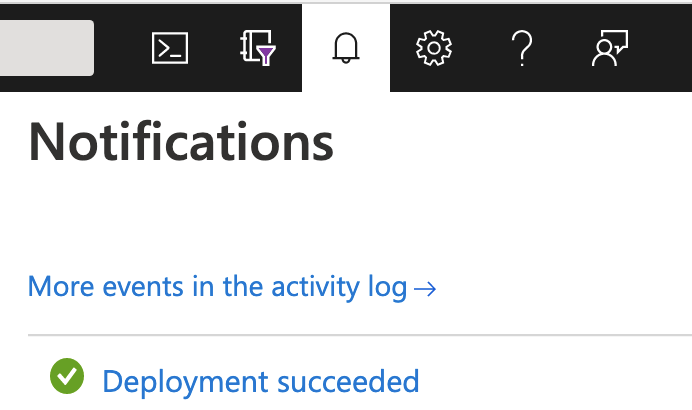

Introduction
This Quick Start guide provides instructions and resources to guide users through deploying Dynamic Read Analysis for GENomics (DRAGEN) on Azure. It is primarily intended for users who are interested in a quick and easy setup for running genomics workloads in the cloud.
This tutorial and its associated Marketplace solution in Azure were developed by Illumina in collaboration with Microsoft. The reference deployment described below serves as a starting point, but can be further customized to meet your needs.
If you run into any issues while going through the tutorial, please share your feedback with us!
Architecture
Supported Regions
DRAGEN on Azure is available in regions where FPGA-enabled Standard NP Family VMs are available. At the time of this writing, supported regions currently include:
- West US 2
- East US
- Southeast Asia (Singapore)
- West Europe (Amsterdam)
For the most current information on available regions, see the NP-series row of the chart here.
Architecture Diagram

Resource List
List of Azure resources that are deployed by this quickstart if default settings and parameters are used:
- Azure Blob Storage Account for input and output data
- Note: A new storage account is created by default, although users have the option to specify an existing storage account - see section on additional deployment configurations
- Blob Storage Container
- Azure Batch Account for managing and scheduling DRAGEN jobs.
- Provisioned in User Subscription Mode.
- Node pool backed by one NP-series VM (fixed scale).
- Azure Key Vault for batch service auth to User Subscription node pool VMs
- Note: Batch service handles auth automatically, so users do not need to take any further action after the Key Vault is created.
Note on Batch Node Pool Allocation
Batch offers two options for allocation of node pools: Batch managed and user subscription modes. A single Batch Account can only support one node pool type at a time, meaning you cannot have batch managed and user subscription mode node pools under the same batch account.
Batch Managed Node Pools
When Batch Managed allocation mode is selected, users must request NP VM quota for each specific Batch instance they create. Nodes are allocated as needed from Batch-managed subscriptions. This scenario works best when users intend to persist and use one or very few Batch instances for their DRAGEN jobs. It is less ideal in situations where the creation/deletion of Batch accounts is automated or occurs frequently, as with CI/CD.
User Subscription Node Pools
When the User Subscription allocation mode is selected, users request an overall quota for NP VMs for a region within their subscription. With this model, the VMs needed for the Batch account are created directly in the user’s subscription. This setup is useful for CI/CD and other cases where users are running DRAGEN across many Batch accounts within a subscription and/or the Batch accounts are short-lived.
Cost Differences in Node Pool Allocation Modes
There may be cost differences between the two different node pool allocation methods. Consider your usage scenarios and consult Azure documentation and pricing calculators to determine which approach will be most optimal for your needs.
Azure Costs
Users are responsible for costs of any services deployed through this quickstart or its customization options.
Prices are subject to change - more information can be found on the pricing pages for Azure resources deployed through this tutorial:
- Azure Blob Storage
- Azure Batch
- Note: There is currently no charge for Batch itself, only the compute resources it uses; see VM pricing below
- Azure NP-series VMs (a NP10s is used in this reference deployment)
- Azure Key Vault
Users are also responsible for costs of any licenses needed to run DRAGEN (not included in this quickstart - must be obtained separately).
Estimate your Costs
For help in estimating your costs to run DRAGEN on Azure, see the pricing calculator located here.
Prerequisites
- A DRAGEN License - To obtain a license, please contact Illumina at techsupport@illumina.com.
- Access to DRAGEN Image via Azure Marketplace - If you would like to gain access, please contact Illumina at techsupport@illumina.com.
Technical Requirements
- Azure Subscription. An Azure Cloud Subscription.
- Quota for NP-Series Virtual Machines. You will need to request a quota for vCPU cores for the NP-series of virtual machines on Azure.
- Azure CLI. You’ll need to install the Azure CLI.
- Genomic Data. This quick start will create (if it does not already exist) an Azure Blob Storage Account. You will need to upload your genomics data to this storage account to utilize DRAGEN.
Quota Requirements
DRAGEN runs on a specific Virtual Machine SKU family in Azure, because it requires field-programmable gate array (FPGA) hardware. Due to this requirement, you will need to request access to this Virtual Machine SKU family, as described below.
NP-Series VMs
DRAGEN runs on FPGA-enabled VMs, which are now generally available as the NP-series on Azure.
Currently, the vCPU requirements for NP-series SKUs are in increments of 10. When requesting an updated quota, we recommend requesting vCPUs in batches of 10. You will need a minimum increase of 10 vCPU Quota for NP-series machines for this tutorial.
For steps to increase or verify your NP-series vCPU quota on Azure, follow this deployment step.
Batch Accounts
This quickstart will utilize Azure Batch as the computing environment for DRAGEN, in user subscription mode.
It is also possible to run Azure Batch in Batch service allocation mode. In Batch service allocation mode, compute nodes are subject to a separate quota. For DRAGEN, in Batch service allocation mode, you will need to request additional quota for NP-series vCPUs for your discrete Azure Batch account. Current default quotas for Batch accounts can be found here. You can increase your Azure Batch account quota by following the steps here.
Required Permissions (Authorization / Access Controls)
To provision this solution, the Active Directory principal (account, service principal, etc.) should require at least Azure subscription-wide contributor access.
If your organization is concerned about this level of access, a deployment pipeline (e.g., GitHub Actions) running as a managed service principal with contributor access can allow others to have a more restricted privilege level (e.g., Resource Group Contributor, Subscription Reader).
When utilizing a User Subscription Mode Batch Account, the Azure Batch Service must be added to the Azure Subscription as a Contributor. To add this level of access, you must be at least a Subscription Contributor. For more information, see additional configuration for user subscription mode.
Deployment
Steps
Login to your Azure Portal account
- Log in to your Azure account in the Azure Portal.
-
Ensure you have Quota for NP-series Virtual Machines, as outlined in the pre-requisites section above, by navigating to:
- Subscriptions -> Choose your subscription
- Click Usages + quotas from the left-side menu
- Filter the list by typing NP into the left search bar.
- You should see
Standard NPS Family vCPUs, and a denomination. If you see0 of 0, click the edit icon to request quota.
- You should see
Deploy the Quickstart (solution template)
- While signed in to your Azure account, open the page for the DRAGEN Solution:
- Navigate to the Marketplace
- Search for “DRAGEN” and select DRAGEN Bio-IT Platform for Genomic Data Analysis on Azure Batch
- If prompted, review the terms and conditions and then choose Accept Terms
- Click Create
-
You’ll be prompted to select a resource group and other particulars of the solution to deploy
NOTE: For storage settings, the “Premium” type SKUs are not currently supported by this offering
- Once you’ve made your selections, click Review + Create at the bottom of the screen and click Create
- You can check deployment status in the top right of the Azure Portal page 
Additional Configurations
Advanced Usage: ARM Template
Incorporating DRAGEN on Azure into an existing solution may be as easy as using the ARM template that is exported alongside this documentation.
Usage Scenarios
Deployment using the ARM template enables several more advanced scenarios, such as:
- Incorporation of infrastructure components needed for DRAGEN into an existing infrastructure
- Automated deployments via CI/CD pipelines
- Customization of the deployment to meet your needs
Prerequisites for ARM Template Deployment
Before attempting to deploy to your subscription via the ARM template, ensure that you have completed all of the prerequisites for running DRAGEN on Azure.
Parameters
The ARM template takes the following input parameters:
Required parameters (no default value set)
| Parameter Name | Description |
|---|---|
prefix |
Prefix for resource names (1-17 alphanumeric characters) |
azureBatchServiceOid |
Object ID for Azure Batch on the user’s tenant (Can be found by running the command az ad sp show --id ddbf3205-c6bd-46ae-8127-60eb93363864 --query objectId) |
Optional parameters (default values are set but can be overridden)
| Parameter Name | Default Value | Description |
|---|---|---|
location |
Resource group location | Azure Region where resources should be deployed |
storageAccountName |
prefix + “storage” |
Name for Azure Blob Storage account (Total of 3-24 alphanumeric characters including prefix) |
storageSku |
Standard_LRS* | Azure Storage SKU |
storageNewOrExisting |
new | Specify whether to use an existing storage account or create a new one (Allowed values: new or existing) |
offerSku |
dragen-3-9 | SKU for the DRAGEN offer in the Marketplace |
vmImageVersion |
3.9.5 | DRAGEN version |
*NOTE: The “Premium” type SKUs are not currently supported by this offering.
Sample ARM Template Deployment
The following sample deploys the ARM template into a resource group using the Azure CLI deployment group create command:
# Set variables for command inputs
RESOURCE_GROUP_NAME="dragen-rg"
LOCATION="EastUS"
PREFIX="dragen"
BATCH_OID=<Batch Object Id for your tenant - see Parameters section>
# Create a resource group
az group create -n "$RESOURCE_GROUP_NAME" -l "$LOCATION"
# Deploy the ARM template
az deployment group create \
-g "$RESOURCE_GROUP_NAME" \
-p prefix="$PREFIX" \
-p azureBatchServiceOid="$BATCH_OID" \
-f mainTemplate.json \
--query "properties.outputs"
Using a New vs. Existing Storage Account
By default, the ARM template included with this quickstart creates a new storage account and container. Some users may already have data uploaded to an existing Azure Blob Storage account. To use existing storage, specify the following input parameters to the ARM template in your deployment:
storageNewOrExisting: existingstorageAccountName: <name of your existing storage account>
Batch Job & Task Timeout
It is possible to set a max run time on either the batch job or batch task.
The below command will terminate the batch job as well as all tasks within it after the job has been present for 360 minutes.
- JOB_ID: The job id of the already created job.
- PT360M: An ISO-8601 duration, PT360M = 360 minutes.
az batch job set \
--job-id $JOB_ID \
--on-all-tasks-complete "terminatejob" \
--job-max-wall-clock-time "PT360M"
If you would like to set a max run time on the batch task instead, you can add the following section to the task.json:
"constraints": {
"maxWallClockTime": "PT360M"
}
Other Deployment Considerations
After deploying DRAGEN on Azure, users will want to take into account the following additional deployment considerations and options, which are not included as part of this quickstart template:
- Compliance
- Authentication
- Security
- Monitoring and Observability
Decisions regarding implementation of any of the above are left to the end user’s discretion.
Testing using the Azure CLI
Once your batch account infrastructure has been created, the following guide can be used to create batch jobs and tasks. This guide makes use of the Azure CLI.
Azure CLI Authentication
The first step is to make sure you are authenticated through Azure CLI, and using the subscription in which your batch account has been provisioned.
Batch Account Login
You will need to authenticate with the provisioned batch account in order to create jobs and tasks.
az batch account login -n <batch account name> -g <resource group name>
Create Batch Job
Once authenticated, the next step is to create a batch job using the following variables:
- JOB_ID: A unique id to assign to the job being created.
- POOL_ID: The name of the pool created with the provided ARM template.
az batch job create --id <JOB_ID> --pool-id <POOL_ID>
Create Batch Task
Once the batch job has been created, a task can be added to it. This can be done using the JOB_ID and a task.json specification file:
- JOB_ID: The same job id used when creating the batch job.
- JSON_FILE: A file that defines a task in JSON format.
Batch Command
The command passed to the batch task is what will run once the batch task starts. The following is an example that will run a series of commands using bash.
This example takes advantage of bash to execute commands, as well as make sure that environment variables are available. The following are example environment variables and bash command:
- REF_DIR: The directory to untar the genome hash table to.
- OUT_DIR: The directory to write the DRAGEN results to.
- FQ1: The path to the first local FASTQ file on the node.
- FQ2: The path to the second local FASTQ file on the node.
- RGID: The RGID associated with this DRAGEN run.
- RGSM: THE RGSM associated with this DRAGEN run.
- OUTPUT_PREFIX: The prefix that will be used for the DRAGEN output files.
- LICENSE: The DRAGEN license.
/bin/bash -c \
"mkdir <REF_DIR> <OUT_DIR>; \
tar xzvf dragen.tar -C <REF_DIR>; \
/opt/edico/bin/dragen --partial-reconfig HMM --ignore-version-check true; \
/opt/edico/bin/dragen -f -r <REF_DIR> \
-1 <FQ1> \
-2 <FQ2> \
--RGID <RGID> \
--RGSM <RGSM> \
--enable-bam-indexing true \
--enable-map-align-output true \
--enable-sort true \
--output-file-prefix <OUTPUT_PREFIX> \
--enable-map-align true \
--output-format BAM \
--output-directory <OUT_DIR> \
--enable-variant-caller true \
--lic-server <LICENSE>"
SAS
The following example will generate a full URL with SAS token to access a file in a private blob storage account. This is useful when wanting to obtain read access to a specific file in a protected storage account.
- BLOB_PATH: The path to the file within the container.
- STORAGE_ACCOUNT: The name of the blob storage account.
- STORAGE_ACCOUNT_KEY: An access key to the storage account.
- EXPIRE_DATE: The datetime when the SAS token should expire.
az storage blob generate-sas \
--name <BLOB_PATH> \
--account-name <STORAGE_ACCOUNT> \
--account-key <STORAGE_ACCOUNT_KEY> \
--container-name <CONTAINER_NAME> \
--expiry <EXPIRE_DATE> \
--permissions r \
--https \
--full-uri \
--output tsv
If obtaining write access to a container within a storage account is necessary, a slightly different command can be used.
az storage container generate-sas \
--name <CONTAINER_NAME> \
--account-name <STORAGE_ACCOUNT> \
--expiry <EXPIRE_DATE> \
--permissions aclrw \
--https-only \
--output tsv
In this case, the SAS token returned by the command will need to be appended to the container URL, for example:
CONTAINER_URL="https://<STORAGE_ACCOUNT>.blob.core.windows.net/<CONTAINER>?<SAS_TOKEN>
Resource Files
In this example, both the genome file and the FASTQ files need to be on the
batch node when running the batch command. This script takes advantage of the
resourceFiles configuration to facilitate this.
If the genome tarball and FASTQ files are in a private blob storage account, a SAS token will need to be generated to allow batch to download the file.
"resourceFiles": [{
"filePath": "dragen.tar",
"httpUrl": "$GENOME_URL"
}, {
"filePath": "1.fq.gz",
"httpUrl": "$FQ1_URL"
}, {
"filePath": "2.fq.gz",
"httpUrl": "$FQ2_URL"
}]
Output Files
Output files configuration tells batch tasks to write certain files to external locations, triggered by certain events. We will use this feature in this example to get various logs and DRAGEN output out to our storage container at the end of the run.
- CONTAINER_URL: The container url generated above with the SAS token appended to it.
- TASK_ID: A task id, used in this case to organize the output.
- OUT_DIR: The directory the DRAGEN results were written to.
"outputFiles": [{
"filePattern": "../stdout.txt",
"destination": {
"container": {
"containerUrl": "<CONTAINER_URL>",
"path": "<TASK_ID>/stdout.txt"
}
},
"uploadOptions": {
"uploadCondition": "taskcompletion"
}
}, {
"filePattern": "../stderr.txt",
"destination": {
"container": {
"containerUrl": "<CONTAINER_URL>",
"path": "<TASK_ID>/stderr.txt"
}
},
"uploadOptions": {
"uploadCondition": "taskcompletion"
}
}, {
"filePattern": "<OUT_DIR>/**/*",
"destination": {
"container": {
"containerUrl": "<CONTAINER_URL>",
"path": "<TASK_ID>/<OUT_DIR>"
}
},
"uploadOptions": {
"uploadCondition": "taskcompletion"
}
}, {
"filePattern": "/var/log/dragen.log",
"destination": {
"container": {
"containerUrl": "<CONTAINER_URL>",
"path": "<TASK_ID>/log/dragen.log"
}
},
"uploadOptions": {
"uploadCondition": "taskcompletion"
}
}, {
"filePattern": "/var/log/dragen/**/*",
"destination": {
"container": {
"containerUrl": "<CONTAINER_URL>",
"path": "<TASK_ID>/log/dragen"
}
},
"uploadOptions": {
"uploadCondition": "taskcompletion"
}
}]
task.json
The overall structure of the task.json will look like the following, with each of the sections described in detail above.
{
"id": "<TASK_ID>",
"commandLine": "<COMMAND>",
"resourcesFiles": [<RESOURCE_FILES>],
"outputFiles": [<OUTPUT_FILES>]
}
Create Task
With the command generated to run within the task, and accessible URLs generated for the genome tarball and FASTQ files, the following command can be used to create the batch task:
The following URLs must either be public, or private but made accessible (for example, with a SAS token):
- GENOME_URL: URL of a genome tarball.
- FQ1_URL: URL of the first FASTQ file.
- FQ2_URL: URL of the second FASTQ file.
az batch task create \
--job-id <JOB_ID> \
--json-file task.json
Working Example
Batch Job Create
az batch job create --id job1 --pool-id mypool
Create $COMMAND
The following command line string is assigned to the $COMMAND variable.
$COMMAND Variable
COMMAND=$(cat <<EOF
/bin/bash -c \
"mkdir dragen output; \
tar xzvf dragen.tar -C dragen; \
/opt/edico/bin/dragen --partial-reconfig HMM --ignore-version-check true; \
/opt/edico/bin/dragen -f -r dragen \
-1 1.fq.gz \
-2 2.fq.gz \
--RGID NA24385-AJ-Son-R1-NS_S33.1 \
--RGSM NA24385-AJ-Son-R1-NS_S33 \
--enable-bam-indexing true \
--enable-map-align-output true \
--enable-sort true \
--output-file-prefix NA24385-AJ-Son-R1-NS_S33 \
--enable-map-align true \
--output-format BAM \
--output-directory output \
--enable-variant-caller true \
--lic-server <LICENSE>"
EOF
)
This one-liner achieves the following:
- Sets up Genome and Output directories
- Unarchives the genome file
- Runs a partial reconfig on the FPGA
- Runs DRAGEN
The $COMMAND variable is now interpolated in the task.json file below.
Create task.json
{
"id": "task1",
"commandLine": "$COMMAND",
"resourceFiles": [{
"filePath": "dragen.tar",
"httpUrl": "https://dragentestdata.blob.core.windows.net/reference-genomes/Hsapiens/hash-tables/hg38_altaware_nohla-cnv-anchored.v8.tar"
}, {
"filePath": "1.fq.gz",
"httpUrl": "https://dragentestdata.blob.core.windows.net/samples/wes/NA24385-AJ-Son-R1-NS_S33/NA24385-AJ-Son-R1-NS_S33_L001_R1_001.fastq.gz"
}, {
"filePath": "2.fq.gz",
"httpUrl": "https://dragentestdata.blob.core.windows.net/samples/wes/NA24385-AJ-Son-R1-NS_S33/NA24385-AJ-Son-R1-NS_S33_L001_R2_001.fastq.gz"
}],
"outputFiles": [{
"filePattern": "../stdout.txt",
"destination": {
"container": {
"containerUrl": "$CONTAINER_URL",
"path": "task1/stdout.txt"
}
},
"uploadOptions": {
"uploadCondition": "taskcompletion"
}
}, {
"filePattern": "../stderr.txt",
"destination": {
"container": {
"containerUrl": "$CONTAINER_URL",
"path": "task1/stderr.txt"
}
},
"uploadOptions": {
"uploadCondition": "taskcompletion"
}
}, {
"filePattern": "output/**/*",
"destination": {
"container": {
"containerUrl": "$CONTAINER_URL",
"path": "task1/output"
}
},
"uploadOptions": {
"uploadCondition": "taskcompletion"
}
}, {
"filePattern": "/var/log/dragen.log",
"destination": {
"container": {
"containerUrl": "$CONTAINER_URL",
"path": "task1/log/dragen.log"
}
},
"uploadOptions": {
"uploadCondition": "taskcompletion"
}
}, {
"filePattern": "/var/log/dragen/**/*",
"destination": {
"container": {
"containerUrl": "<CONTAINER_URL>",
"path": "task1/log/dragen"
}
},
"uploadOptions": {
"uploadCondition": "taskcompletion"
}
}]
}
Batch Task Create
az batch task create \
--job-id job1 \
--json-file task.json
File Streaming
While it is always necessary to have the genome file locally on the node, DRAGEN can stream input FASTQ files and BAMs from private Azure Blob containers for faster processing. DRAGEN does not currently support streaming from public Blob containers.
Stream from Azure Blob Storage
The following parameters are needed for streaming from Blob storage:
- STORAGE_ACCOUNT_NAME: The name of the blob storage account.
- STORAGE_ACCOUNT_KEY: An access key to the storage account.
- FQ1_URL: The full URL to the first FASTQ file in Azure Blob Storage.
- FQ2_URL: The full URL to the second FASTQ file in Azure Blob Storage.
$COMMAND Variable for Streaming FASTQ Inputs
The following is an example $COMMAND variable that streams FASTQ inputs from Blob storage:
COMMAND=$(cat <<EOF
/bin/bash -c \
"echo DefaultEndpointsProtocol=https >> ~/.azure-credentials; \
echo AccountName=<STORAGE_ACCOUNT_NAME> >> ~/.azure-credentials; \
echo AccountKey=<STORAGE_ACCOUNT_KEY> >> ~/.azure-credentials; \
echo EndpointSuffix=core.windows.net >> ~/.azure-credentials; \
mkdir dragen output; \
tar xzvf dragen.tar -C dragen; \
/opt/edico/bin/dragen --partial-reconfig HMM --ignore-version-check true; \
/opt/edico/bin/dragen -f -r dragen \
-1 <FQ1_URL> \
-2 <FQ2_URL> \
--RGID <RGID> \
--RGSM <RGSM> \
--enable-bam-indexing true \
--enable-map-align-output true \
--enable-sort true \
--output-file-prefix <OUTPUT_PREFIX> \
--enable-map-align true \
--output-format BAM \
--output-directory output \
--enable-variant-caller true \
--lic-server <LICENSE>"
EOF
)
This one-liner achieves the same as the $COMMAND before
with the addition of creating a .azure-credentials file containing key-value
pairs of Storage Account credentials.
In this case, the FASTQ files will no longer need to be referenced in the resourceFiles in the task.json
FASTQ List
If using a FASTQ list file to reference and stream FASTQ files, the FASTQ list file must also be local to the node. The FASTQ files referenced in the FASTQ list can be URLs to files on an Azure Storage Account, in which case, the FASTQs will be streamed by DRAGEN.
The following is an example of streaming inputs with a FASTQ list using the
resourceFiles configuration as well as a SAS token to access the file in Azure Blob Storage.
This is stored as the $LIST_URL variable.
Since we are streaming from Azure Blob Storage, we will once again need the ~/.azure-credentials file.
$LIST_URL for Streaming
LIST_URL=$(az storage blob generate-sas \
--name <FASTQ_LIST_BLOB_PATH> \
--account-name <STORAGE_ACCOUNT> \
--account-key <STORAGE_ACCOUNT_KEY> \
--container-name <CONTAINER_NAME> \
--expiry <EXPIRE_DATE> \
--permissions r \
--https \
--full-uri \
--output tsv)
$COMMAND Variable for Streaming with FASTQ List
COMMAND=$(cat <<EOF
/bin/bash -c \
"echo DefaultEndpointsProtocol=https >> ~/.azure-credentials; \
echo AccountName=<STORAGE_ACCOUNT_NAME> >> ~/.azure-credentials; \
echo AccountKey=<STORAGE_ACCOUNT_KEY> >> ~/.azure-credentials; \
echo EndpointSuffix=core.windows.net >> ~/.azure-credentials; \
mkdir dragen output; \
tar xvf dragen.tar -C dragen; \
/opt/edico/bin/dragen --partial-reconfig HMM --ignore-version-check true; \
/opt/edico/bin/dragen -f -r dragen \
--fastq-list fastq_list.csv \
--fastq-list-sample-id <RGSM> \
--enable-bam-indexing true \
--enable-map-align-output true \
--enable-sort true \
--output-file-prefix <OUTPUT_PREFIX> \
--enable-map-align true \
--output-format BAM \
--output-directory output \
--enable-variant-caller true \
--lic-server <LICENSE>"
EOF
)
task.json resourceFiles
"resourceFiles": [{
"filePath": "dragen.tar",
"httpUrl": "$GENOME_URL"
}, {
"filePath": "fastq_list.csv",
"httpUrl": "$LIST_URL"
}]
Example Bash Script
An example bash script using the above commands is available for reference.
There is a required LICENSE_URL environment variable, as well as some variables within the script
that must be set before running it, ie:
LICENSE_URL=https://<username>:<password>@license.edico.com ./create-batch-task.sh
There are accompanying comments within the bash script to help set these.
Troubleshooting
ARM Deployment
If you are running into issues getting the infrastructure spun up through the ARM template, there are a few options for debugging:
-
If the resource group was created, navigate to the resource group, and then the deployments menu option. Here you will find the list of deployments tied to this resource group, and navigating deeper into each deployment may show additional information for the deployment of each resource.
-
Open the Activity Log for an additional source of information for recent issues within your subscription.
Batch Tasks
If you are running into issues getting your batch task to run successfully,
the best place to get information to help debug the problem is within the
stdout and stderr of the batch task itself. This can be accessed by navigating
to your batch account in the portal, and then to the specific job and task
that ran. Once there, you will be able to access stdout.txt and stderr.txt:

DRAGEN Issues
For failed DRAGEN runs, navigate to the batch account in the portal, then job and task associated with the failed run to view DRAGEN log files.
Common Issues
-
Quota issues: If quota increases haven’t been requested, it can be common to run into quota issues for both the number of batch accounts as well as for the
Standard NPS Family vCPUs. Please make sure you have available quota before deploying the ARM template. -
Input file streaming: Currently, DRAGEN does not support input streaming from public Blob containers. Input files from private Blob containers can be streamed provided that the proper storage credentials are passed to the batch command.
-
Command lines: Ensure that variables supplied to Azure CLI commands (e.g., account keys, license URLs, names of resource groups, batch accounts, storage accounts and containers, batch pools, etc.) are correct. Ensure that DRAGEN command lines are formed properly and that the correct variables are passed to it.
-
Task JSON: Ensure that keys and values supplied to the json task file are correct and complete. Ensure that the file adheres to JSON formatting rules.
-
Authentication: Ensure that the Azure CLI is authenticated for use with the proper subscription prior to creating resource groups and deploying ARM templates. Log in to the proper Azure batch account prior to creating batch jobs and tasks. Provide the required authentication (e.g., SAS tokens) for private storage accounts and/or input files, as needed. Ensure that sufficient expiration periods are specified when generating authentication tokens.
Additional Resources
Contributing
Contributions are welcome!
https://github.com/Illumina/dragen-azure-quickstart
As the documentation within the above repository is not directly managed through the repository, please do not submit pull requests.
How to contribute
When you have an idea for contribution, or want to report a bug or issue, please open an issue!
Feedback
Please open a issue if you would like to provide any feedback on the contents of this repository.
Notices
This document is provided for informational purposes only. It represents Azure’s current product offerings and practices as of the date of issue of this document, which are subject to change without notice. Customers are responsible for making their own independent assessment of the information in this document and any use of Azure’s products or services, each of which is provided “as is” without warranty of any kind, whether expressed or implied. This document does not create any warranties, representations, contractual commitments, conditions, or assurances from Azure, its affiliates, suppliers, or licensors. The responsibilities and liabilities of Azure to its customers are controlled by Azure agreements, and this document is not part of, nor does it modify, any agreement between Azure and its customers.
Legal Notices
Microsoft and any contributors grant you a license to the Microsoft documentation and other content in this repository under the Creative Commons Attribution 4.0 International Public License, see the LICENSE file, and grant you a license to any code in the repository under the MIT License, see the LICENSE-CODE file.
Microsoft, Windows, Microsoft Azure and/or other Microsoft products and services referenced in the documentation may be either trademarks or registered trademarks of Microsoft in the United States and/or other countries. The licenses for this project do not grant you rights to use any Microsoft names, logos, or trademarks. Microsoft’s general trademark guidelines can be found at http://go.microsoft.com/fwlink/?LinkID=254653.
Privacy
Privacy information can be found at https://privacy.microsoft.com/en-us/
Microsoft and any contributors reserve all others rights, whether under their respective copyrights, patents, or trademarks, whether by implication, estoppel or otherwise.